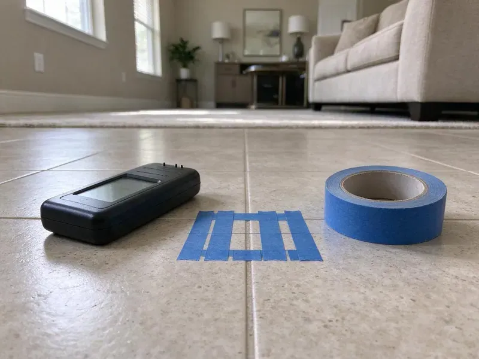

New Construction Plumbing in Milwaukee, WI
For new home builds across Milwaukee, WI, HKV Plumbing delivers expert plumbing system installations. We ensure your new construction meets all local codes and standards.
- Code Compliant Work
- Fast Project Consultations
- Licensed Plumbers
- Inspection-Ready Every Phase
Build with Confidence: New Construction Plumbing in Milwaukee, WI.
Contact HKV Plumbing today for a thorough consultation and estimate on your new build.
Trusted New Construction Plumbing for Your Home in Milwaukee, WI
At HKV Plumbing, we partner with builders and homeowners in Milwaukee, WI to deliver top-tier new construction plumbing. Our team installs everything from the main water line to fixtures, all while following Wisconsin plumbing codes and best practices.
Our expertise includes:
- Water supply lines, drain lines, and vent systems.
- Rough-in plumbing for residential and commercial builds.
- Rough-in plumbing for all fixtures and equipment.

Additional Plumbing Maintenance Services in Milwaukee, WI
Our maintenance and specialty plumbing services in Milwaukee, WI catch small problems before they become emergencies.


Customers
Why Choose HKV Plumbing for New Construction Plumbing in Milwaukee, WI?
Choosing the right plumbing contractor for new construction is essential for the long-term integrity of your home. Our team ensures every pipe and fitting is installed to the highest standards.
- Plan-Accurate Layouts, We set every stub-out from your approved plans and cabinet drawings, not guesses.
- Timely Completion, Our team works with other trades to ensure plumbing phases are completed on schedule, keeping your project on track.
- Tested Before Cover, Drain lines get a water or air test and supply lines get a pressure test before any inspection.
Citywide Coverage
No matter where your new build is located in Milwaukee, our expert plumbers are ready to provide top-tier new construction plumbing services. We are familiar with the particular challenges and requirements of different Milwaukee developments.
Experienced Team
Our team has worked with production builders and one-off custom homes, so we understand both speed and detail. Every lead plumber is trained on PEX-A expansion fittings, solvent welding and gas pipe sizing.
Safety-First Approach
Safety and code compliance are paramount in all our new construction plumbing projects. We implement rigorous safety practices on every job site and ensure all installations meet or exceed Wisconsin plumbing codes and local Milwaukee ordinances.
Trusted Certified Milwaukee Plumbing Services Professionals
At HKV Plumbing, we take pride in providing certified plumbing services throughout Milwaukee, WI. Backed by recognized industry credentials, our experienced plumbers combine technical skill with genuine customer care. Whether it is repair, installation, or maintenance, we follow strict safety and quality standards to deliver lasting results you can trust.
Call Us Now PHCC Plumbing Contractor Recognition
PHCC Plumbing Contractor Recognition Better Business Bureau (BBB) Accreditation
Better Business Bureau (BBB) Accreditation Angi Certified Pro
Angi Certified Pro ISO 9001 Quality Management Certification
ISO 9001 Quality Management CertificationInspection-Ready New Construction Plumbing Services in Milwaukee, WI
Rough-In Plumbing Services in Milwaukee
The rough-in phase is where the core plumbing system is installed within the walls, floors, and ceilings before drywall. This includes all supply lines, drain lines, and vent piping for every fixture. Our plumbers meticulously plan and execute the rough-in, using durable fittings and ensuring all pipes are properly secured and leak-tested before inspection.

Residential New Build Plumbing in Milwaukee
For new homes, our residential new construction plumbing includes the complete installation of water supply lines, drain waste vent systems, and gas lines. We confirm proper sizing and pressure for all fixtures, from showers to kitchen sinks, while accounting for local water quality and potential foundation movement. Water softeners are a common feature in many Wisconsin homes, helping protect water heaters, fixtures and appliances from scale. Our process includes meticulous planning to prevent future slab leaks or drainage problems tied to the soil under your lot.
Preventing Common Wisconsin Plumbing Issues in New Builds in Milwaukee, WI
New construction in Wisconsin must account for local conditions. Full basements are standard in Wisconsin homes, and sump pumps are common where clay or high groundwater holds water near the foundation. We focus on installations that resist shifting foundations and soil movement, which can stress pipes. Water softeners are a common feature in many Wisconsin homes, helping protect water heaters, fixtures and appliances from scale. We recommend appropriate piping materials and treatment options to minimize scale buildup over time, so your new home's plumbing lasts for decades.
Gas Line Installation for New Homes in Milwaukee
If your new home will use natural gas for heating, cooking, or water heating, HKV Plumbing provides safe and code-compliant gas line installation. This involves running new gas lines from the main supply to all gas equipment. Our licensed plumbers confirm all connections are secure and tested for leaks, adhering to strict safety protocols for gas work.
Water Heater Installation for New Builds in Milwaukee
Selecting and installing the right water heater is essential for any new construction. We provide expert installation of traditional tank-style and tankless water heaters, considering your property's hot water demands and energy efficiency goals. Our plumbers ensure correct sizing, venting, and gas or electrical connections, adhering to all safety regulations for new homes in Milwaukee.
Sewer and Water Main Connections in Milwaukee, WI
Connecting your new home to the municipal sewer and water mains is a key step in new construction plumbing. HKV Plumbing handles all aspects of these connections, including excavation, trenching, pipe laying, and backfilling. We provide proper grading and sealing to prevent future leaks or blockages. Full basements are standard in Wisconsin homes, and sump pumps are common where clay or high groundwater holds water near the foundation.
Guest House, ADU and Addition Plumbing in Milwaukee, WI
Guest houses and additions need plumbing that ties into the existing house without overloading old drain lines. We locate the existing sewer, check its condition with a camera and confirm there is enough fall to the new building. Supply lines can be branched from the main house or run as a separate service, depending on distance and pressure. We also handle the trenching between structures and restore the yard when we are done.

Gas Piping for New Homes in Milwaukee
We size and install gas piping for ranges, water heaters, furnaces, fireplaces, pool heaters and outdoor kitchens. Black iron and CSST systems are both available, and CSST is bonded per manufacturer and code requirements. We calculate total BTU load and pipe length so every appliance gets enough pressure even when everything runs at once. The system is pressure tested and inspected before the utility sets the meter.
New Construction Plumbing Near Me in Milwaukee, WI
If you're searching for dependable new construction plumbing near me in Milwaukee, WI, HKV Plumbing is your trusted local expert. Our team is ready to mobilize quickly for your project, providing timely and efficient service right in your neighborhood.
When you search for a new construction plumber near me, you want a crew that can be on site the morning your forms go up. Our crews are based close enough to Milwaukee to keep that kind of schedule. We can walk your lot, review your plans and give you a firm bid quickly.
HKV Plumbing at a Glance
- Licensed and insured plumbers serving Milwaukee, WI
- Same-day appointments and 24/7 emergency response
- Clear written estimates, no hidden fees
- 4.8-star rated by 448+ Wisconsin customers
Milwaukee Map
Milwaukee Information
- Population
- 561,385
- Area codes
- 414/262/920
- Service area
- Milwaukee and communities within 40 miles
- Nearby
- Wauwatosa, West Allis, Waukesha, Racine
New construction plumbing in Milwaukee, WI calls for careful attention to local climate, soil and building codes to deliver a durable, efficient system for decades. Long, cold winters and warm, humid summers are the main climate stresses on Wisconsin plumbing, with a heating season that lasts for months.
Expert Services
Trust our professionals for reliable HKV Plumbing solutions in Milwaukee, WI.
Our Specialized Plumbing Services in Milwaukee, WI
At HKV Plumbing, we provide a complete range of plumbing services across Milwaukee, WI. From leak detection to full system installations, our team ensures fast, precise, and affordable service for both residential and commercial properties. Explore our core services below:


Here Is How Our New Construction Plumbing Process Works in Milwaukee, WI
Our new construction plumbing process is designed for efficiency and accuracy, ensuring a solid system for your new property in Milwaukee.
Request a Quote
Start by contacting HKV Plumbing at (414) 432-4641 to discuss your new construction plumbing project. We will gather details about your blueprints and project scope to provide a comprehensive estimate.
Plan & Design
Our experts review your building plans and collaborate with your construction team. We optimize plumbing layouts for efficiency, code compliance, and future serviceability.
Rough-In Installation
We install all underground and in-wall piping, including water supply, drain, and vent lines. This critical phase is performed with careful attention to detail before foundations and walls are closed.
Frequently Asked Questions About New Construction Plumbing in Milwaukee
Most new single-family homes in the Milwaukee area cost between $12,000 and $25,000 to plumb, with larger custom homes running $30,000 or more. Fixture count, pipe material, water heater type and extras like recirculation or outdoor kitchens set the final price. We provide an detailed bid from your plans.
We can run a dedicated return line during rough-in so hot water reaches distant bathrooms in seconds. A dedicated line works better than retrofit crossover valves and adds roughly $800 to $2,000 depending on layout. It also saves the water that would otherwise run down the drain while you wait for hot water.
Yes, we can handle only the underground, only rough-in and top-out, or only trim. If another plumber started the job, we'll inspect and test their work before taking it over. That protects you and keeps the inspection record clean.
The plumbing rough-in phase for a typical residential build in Milwaukee generally takes 1 to 2 weeks, depending on the crew size and complexity. The final fixture installation and trim-out generally takes an additional 2 to 4 days later in the construction schedule.
Some jurisdictions allow owner-builders to do their own plumbing on a home they will live in, but the work still has to pass every inspection. Under-slab and gas work are the hardest to get right and the most expensive to fix later. Many owner-builders hire us for those phases and finish easier tasks themselves.
HKV Plumbing offers a solid warranty on all our new construction plumbing installations. This covers both materials and labor, giving you peace of mind that your new plumbing system in Milwaukee is protected against defects for a specified period after completion.
Yes, we can build a water softening system into your new construction plumbing design. Water softeners are a standard feature in many Wisconsin homes, helping protect water heaters, fixtures and appliances from scale. A softener loop can be installed during the rough-in phase to protect your entire plumbing system and appliances from mineral buildup.
Choosing a local plumber like HKV Plumbing for new construction in Milwaukee means working with professionals who understand local codes, soil conditions, and common building practices in Wisconsin. We have established relationships with local suppliers and inspectors, making for a smoother and more efficient project.
What People Are Saying About Our Plumbing Experts?

Emily R.
I called HKV Plumbing for plumbing repair, and the technician was fast, polite, and thorough. They explained the problem clearly and fixed it the same day. I will definitely hire them again. Highly recommended!
Plumbing Repair · Milwaukee, WI
Robert G.
The trenchless sewer replacement saved our front yard. They walked us through the camera inspection footage first so we knew exactly what we were paying for.
Sewer Line Replacement · Kenosha, WI
Patricia H.
We had a slab leak that two other companies could not find. HKV Plumbing located it in under an hour, explained our options, and the price matched the quote to the dollar.
Slab Leak Repair · Kenosha, WI
Mark T.
When our office needed drain cleaning, HKV Plumbing provided quick, reliable service. The plumber arrived on time and made sure every drain flowed perfectly before leaving. Very satisfied.
Drain Cleaning · Sheboygan, WI
Daniel K.
A pipe burst at 11 pm and they actually answered. The plumber showed up within the hour, shut everything down, and had us back to normal the next morning. Could not ask for more.
Emergency Plumbing · Wauwatosa, WI
Laura S.
I scheduled a water heater replacement, and the team made the process smooth and affordable. The new unit works perfectly, and they cleaned up after completing the job.
Water Heater Replacement · Wauwatosa, WI